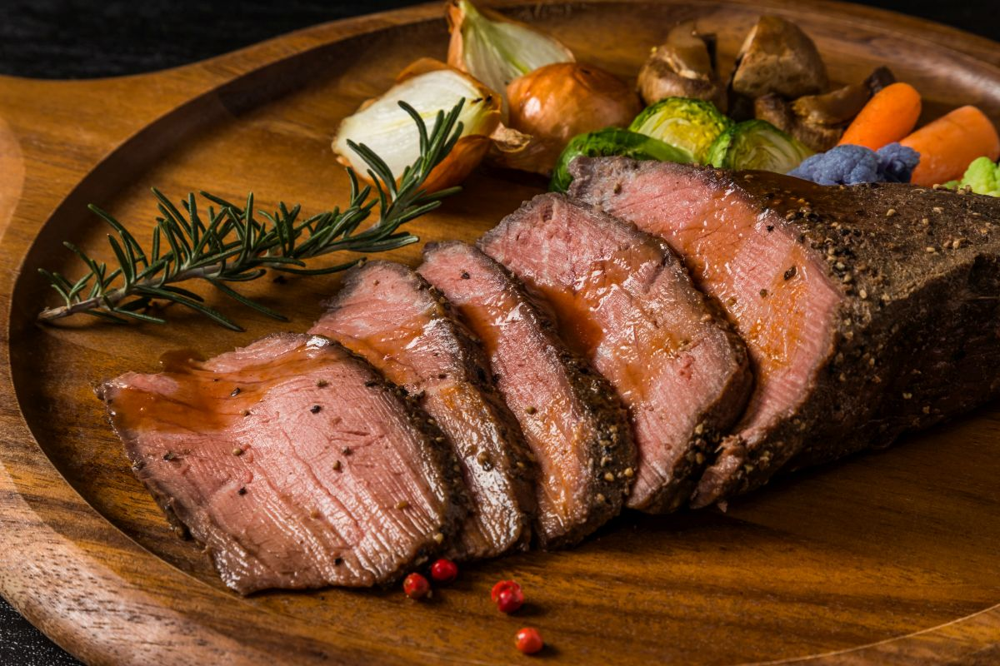

Home
Arrosto recipe

Description
Arrosto, or Italian roast, is a comforting and flavorful dish where a
cut of meat (typically beef, pork, or veal) is slow-roasted with
aromatic herbs, vegetables, and wine. It's a classic Sunday meal in
Italy, known for its tender texture and rich, herb-infused gravy. Served
with roasted vegetables or polenta, it’s a centerpiece of Italian family
gatherings.
Ingredients
For the meat
- 1.5kg (3.3 lb) beef chuck roast
- 2-3 garlic cloves
- 2 sprigs of rosemary
- 2-3 sage leaves
- 2 tbsp olive oil
- salt and pepper
For the sauce and vegetables
- 2 large carrots (peeled and chopped)
- 2 celery stalks (chopped)
- 1 large onion (chopped)
- 3-4 medium potatoes (optional, quartered)
- 1 cup dry white wine
- 2 cups beef or chicken stock
- 2 tbsp tomato paste
- 2 tbsp unsalted butter (optional, for a richer gravy)
Steps
- Preheat oven to 350°F (180°C).
- Season the beef chuck roast with salt and pepper.
-
In a large skillet, heat the olive oil over medium-high heat. Add the
garlic, rosemary, and sage. Cook until fragrant, about 1 minute.
-
Add the beef to the skillet and sear on all sides until browned, about
2-3 minutes per side.
- Transfer the beef to a roasting pan.
- Add the carrots, celery, onion, and potatoes to the pan.
- Pour the wine and stock over the meat and vegetables.
-
Cover the pan with foil and roast in the oven for 2-2.5 hours, or
until the meat is tender and the vegetables are tender.
-
Remove the foil and roast for another 30-45 minutes, or until the meat
is browned and the vegetables are tender.
-
Remove the meat from the oven and let it rest for 15-20 minutes.
-
While the meat is resting, make the gravy. In a small saucepan, melt
the butter over medium heat. Add the flour and whisk until smooth.
- Add the wine and stock to the saucepan and whisk until smooth.
-
Cook the sauce over medium heat, stirring occasionally, until it
thickens, about 10-15 minutes.
- Slice the meat and serve with the gravy and vegetables.
Top